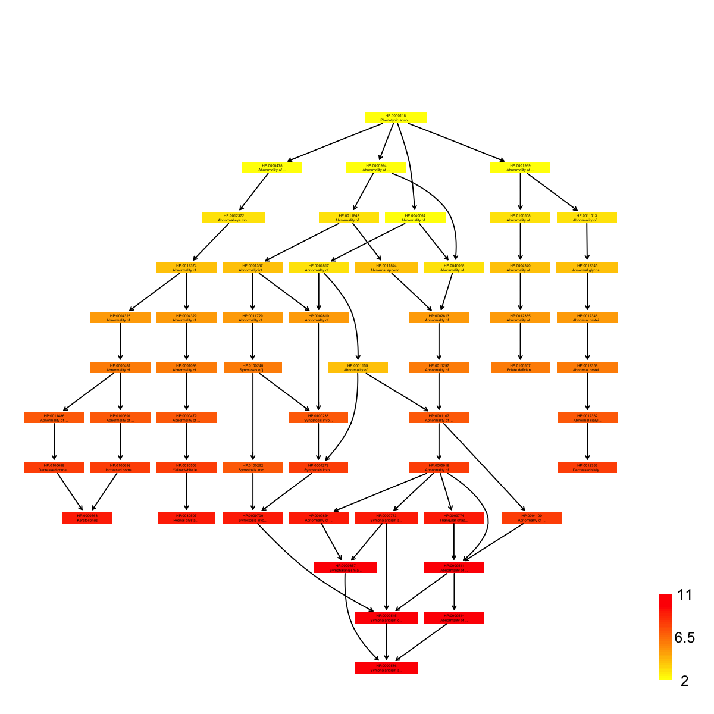
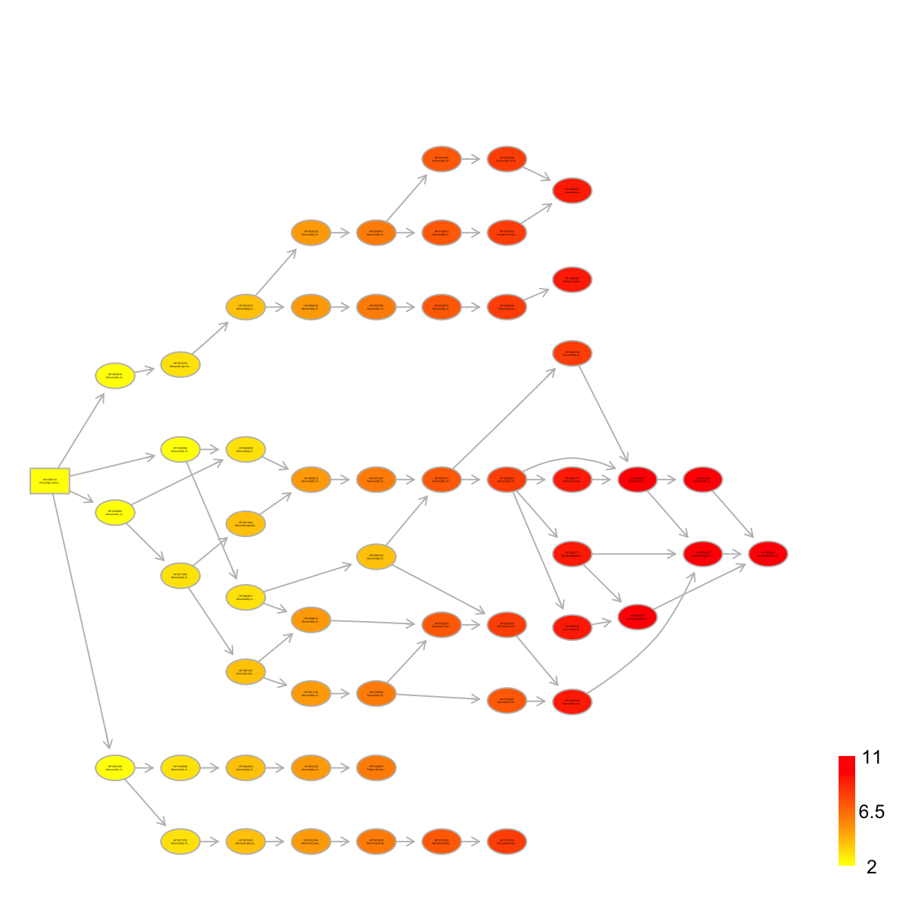

<!DOCTYPE html>
<html lang="en">
  <head>
    <meta charset="utf-8">
<title>visDAG @ dnet 1.0.3</title>
<meta name="viewport" content="width=device-width, initial-scale=1.0">
<meta name="author" content="">

<link href="css/bootstrap.css" rel="stylesheet">
<link href="css/bootstrap-responsive.css" rel="stylesheet">
<link href="css/highlight.css" rel="stylesheet">
<link href="css/staticdocs.css" rel="stylesheet">


<style type="text/css">

.navbar .brand {
  display: block;
  float: left;
  padding: 8px 20px 12px;
  margin-left: -20px;
  font-size: 20px;
  font-weight: 200;
  line-height: 1;
  color: #999999;
}

.navbar .brand:hover {
  color: #F87217;
  text-decoration: none;
  background-color: transparent;
}

.navbar .nav > li > a:hover {
  color: #F87217;
  text-decoration: underline;
  background-color: transparent;
}

</style>


<!--[if lt IE 9]>
  <script src="http://html5shim.googlecode.com/svn/trunk/html5.js"></script>
<![endif]-->

<!-- google analytics -->
<script type="text/javascript">

  var _gaq = _gaq || [];
  _gaq.push(['_setAccount', 'UA-17338744-2']);
  _gaq.push(['_trackPageview']);

  (function() {
    var ga = document.createElement('script'); ga.type = 'text/javascript'; ga.async = true;
    ga.src = ('https:' == document.location.protocol ? 'https://ssl' : 'http://www') + '.google-analytics.com/ga.js';
    var s = document.getElementsByTagName('script')[0]; s.parentNode.insertBefore(ga, s);
  })();

</script>

<!-- Enlarge image -->
<script type="text/javascript">
    function newWin(url, name, width, height) { 
       
        var left = (screen.width/2)-(width/2);
        var top = (screen.height/2)-(height/2); 
        
        window.open(url,name,'scrollbars=yes,resizable=yes,fullscreen=yes, width=' + width + ', height='+height+', top='+top+', left='+left);
    }
</script>
  </head>

  <body>
    <div class="navbar">
  <div class="navbar-inner">
    <div class="container">
      <a class="brand" href="index.html">dnet 1.0.3</a>
      <div class="nav">
        <ul class="nav">
          <li><a href="index.html"><i class="icon-home icon-white"></i> Home</a></li>
        </ul>
        <ul class="nav">
          <li><a href="install.html"><i class="icon-wrench icon-white"></i> Installation</a></li>
        </ul>
        <ul class="nav">
          <li><a href="docs.html"><i class="icon-book icon-white"></i> Documentations</a></li>
        </ul>
        <ul class="nav">
          <li><a href="rdata.html"><i class="icon-file icon-white"></i> RData</a></li>
        </ul>
        <ul class="nav">
          <li><a href="demos.html"><i class="icon-play icon-white"></i> Demos</a></li>
        </ul>
        <ul class="nav">
          <li><a href="faqs.html"><i class="icon-question-sign icon-white"></i> FAQs</a></li>
        </ul>
        <ul class="nav">
          <li><a href="cite.html"><i class="icon-pencil icon-white"></i> Citation</a></li>
        </ul>
      </div>
    </div>
  </div>
</div>

    <div class="container">
      <header>
        
      </header>
      
      <h2>Function to visualise a direct acyclic graph (DAG) with node colorings according to a named input data vector (if provided)</h2>

<div class="row">
  <div class="span8">
  
    <h3>Description</h3>
    <p><code>visDAG</code> is supposed to visualise a direct acyclic
graph (DAG) with node colorings according to a named input
data vector (if provided)</p>
  
    <h3>Usage</h3>
    <pre>visDAG(g, data = NULL, height = 7, width = 7, margin = rep(0.1, 4), colormap = c("yr", 
  "bwr", "jet", "gbr", "wyr", "br", "rainbow", "wb", "lightyellow-orange"), ncolors = 40, 
      zlim = NULL, colorbar = T, colorbar.fraction = 0.1, newpage = T, layout.orientation = c("left_right", 
          "top_bottom", "bottom_top", "right_left"), node.info = c("none", "term_id", 
          "term_name", "both", "full_term_name"), graph.node.attrs = NULL, graph.edge.attrs = NULL, 
      node.attrs = NULL)</pre>
    
    <h3>Arguments</h3>
    <dl>
      <dt>g</dt>
      <dd>an object of class "igraph"</dd>
      <dt>data</dt>
      <dd>a named input data verctor used to color-code
vertices/nodes. The input data vector must have names,
and these names should include all node names of input
graph, i.e. V(g)$name, since there is a mapping
operation. The way of how to color-code is to map values
in the data onto the whole colormap (see the next
arguments: colormap, ncolors, zlim and colorbar)</dd>
      <dt>height</dt>
      <dd>a numeric value specifying the height of
device</dd>
      <dt>width</dt>
      <dd>a numeric value specifying the width of
device</dd>
      <dt>margin</dt>
      <dd>margins as units of length 4 or 1</dd>
      <dt>colormap</dt>
      <dd>short name for the colormap. It can be
one of "jet" (jet colormap), "bwr" (blue-white-red
colormap), "gbr" (green-black-red colormap), "wyr"
(white-yellow-red colormap), "br" (black-red colormap),
"yr" (yellow-red colormap), "wb" (white-black colormap),
and "rainbow" (rainbow colormap, that is,
red-yellow-green-cyan-blue-magenta). Alternatively, any
hyphen-separated HTML color names, e.g.
"lightyellow-orange" (by default), "blue-black-yellow",
"royalblue-white-sandybrown",
"darkgreen-white-darkviolet". A list of standard color
names can be found in
<a href = 'http://html-color-codes.info/color-names'>http://html-color-codes.info/color-names</a></dd>
      <dt>ncolors</dt>
      <dd>the number of colors specified over the
colormap</dd>
      <dt>zlim</dt>
      <dd>the minimum and maximum z/data values for
which colors should be plotted, defaulting to the range
of the finite values of z. Each of the given colors will
be used to color an equispaced interval of this range.
The midpoints of the intervals cover the range, so that
values just outside the range will be plotted</dd>
      <dt>colorbar</dt>
      <dd>logical to indicate whether to append a
colorbar. If data is null, it always sets to false</dd>
      <dt>colorbar.fraction</dt>
      <dd>the relative fraction of
colorbar block against the device size</dd>
      <dt>newpage</dt>
      <dd>logical to indicate whether to open a new
page. By default, it sets to true for opening a new page</dd>
      <dt>layout.orientation</dt>
      <dd>the orientation of the DAG
layout. It can be one of "left_right" for the left-right
layout (viewed from the DAG root point), "top_bottom" for
the top-bottom layout, "bottom_top" for the bottom-top
layout, and "right_left" for the right-left layout</dd>
      <dt>node.info</dt>
      <dd>tells the ontology term information used
to label nodes. It can be one of "none" for no node
labeling, "term_id" for using Term ID, "term_name" for
using Term Name (the first 15 characters), "both" for
using both of Term ID and Name (the first 15 characters),
and "full_term_name" for using the full Term Name</dd>
      <dt>graph.node.attrs</dt>
      <dd>a list of global node attributes.
These node attributes will be changed globally. See
'Note' below for details on the attributes</dd>
      <dt>graph.edge.attrs</dt>
      <dd>a list of global edge attributes.
These edge attributes will be changed globally. See
'Note' below for details on the attributes</dd>
      <dt>node.attrs</dt>
      <dd>a list of local edge attributes. These
node attributes will be changed locally; as such, for
each attribute, the input value must be a named vector
(i.e. using Term ID as names). See 'Note' below for
details on the attributes</dd>
    </dl>
    <!-- 
    -->
    
    <div class="Value">
      <h3>Value</h3>
      
      <p>An object of class 'Ragraph'</p>
    </div>
    <div class="Note">
      <h3>Note</h3>
      
      <p>A list of global node attributes used in
"graph.node.attrs": <ul>
<li>"shape": the shape of
the node: "circle", "rectangle", "rect", "box" and
"ellipse" </li>
<li>"fixedsize": the logical to use only width
and height attributes. By default, it sets to true for not
expanding for the width of the label </li>
<li>"fillcolor":
the background color of the node </li>
<li>"color": the color
for the node, corresponding to the outside edge of the
node </li>
<li>"fontcolor": the color for the node
text/labelings </li>
<li>"fontsize": the font size for the
node text/labelings </li>
<li>"height": the height (in inches)
of the node: 0.5 by default </li>
<li>"width": the width (in
inches) of the node: 0.75 by default </li>
<li>"style": the
line style for the node: "solid", "dashed", "dotted",
"invis" and "bold" </li>
</ul>
 A list of global edge attributes used
in "graph.edge.attrs": <ul>
<li>"color": the color
of the edge: gray by default </li>
<li>"weight": the weight of
the edge: 1 by default </li>
<li>"style": the line style for
the edge: "solid", "dashed", "dotted", "invis" and "bold"
</li>
</ul>
 A list of local node attributes used in "node.attrs"
(only those named Term IDs will be changed locally!):
<ul>
<li>"label": a named vector specifying the node
text/labelings </li>
<li>"shape": a named vector specifying
the shape of the node: "circle", "rectangle", "rect", "box"
and "ellipse" </li>
<li>"fixedsize": a named vector specifying
whether it sets to true for not expanding for the width of
the label </li>
<li>"fillcolor": a named vector specifying the
background color of the node </li>
<li>"color": a named vector
specifying the color for the node, corresponding to the
outside edge of the node </li>
<li>"fontcolor": a named vector
specifying the color for the node text/labelings
</li>
<li>"fontsize": a named vector specifying the font size
for the node text/labelings </li>
<li>"height": a named vector
specifying the height (in inches) of the node: 0.5 by
default </li>
<li>"width": a named vector specifying the width
(in inches) of the node: 0.75 by default </li>
<li>"style": a
named vector specifying the line style for the node:
"solid", "dashed", "dotted", "invis" and "bold" </li>
</ul></p>
      <p></p>
    </div>
    
    <h3 id="examples">Examples</h3>
    <pre class="examples"><div class='input'># 1) load HPPA as igraph object
data(ig.HPPA)
g <- ig.HPPA

# 2) randomly select vertices as the query nodes
# the more common, the query nodes can be term id
nodes_query <- V(g)[sample(V(g),5)]$name

# 3) obtain the induced subgraph based on all possible paths
subg <- dDAGinduce(g, nodes_query, path.mode="all_paths")

# 4) just visualise the induced subgraph
visDAG(g=subg, node.info="both")

# 5) color-code nodes/terms according to its level
data <- dDAGlevel(subg)
visDAG(g=subg, data=data, node.info="both")
</div>
<a href="javascript:newWin('visDAG-2.png', 'visDAG-2.png', '1200', '1200')" title="Click to enlarge"></a>
<div class='input'># 5a) globally change the node and edge attributes
visDAG(g=subg, data=data, layout.orientation="top_bottom",
node.info="both",
graph.node.attrs=list(fixedsize=FALSE,shape="box",color="transparent"),
graph.edge.attrs=list(color="black"))
</div>
<a href="javascript:newWin('visDAG-4.png', 'visDAG-4.png', '1200', '1200')" title="Click to enlarge"></a>
<div class='input'># 5b) locally highlight the root by changing its shape into "box"
root <- dDAGroot(subg)
root.shape <- "box"
names(root.shape) <- V(subg)[root]$name
visDAG(g=subg, data=data, node.info="both",
node.attrs=list(shape=root.shape))
</div>
<a href="javascript:newWin('visDAG-6.png', 'visDAG-6.png', '1200', '1200')" title="Click to enlarge"></a>
<div class='input'># 5c) further locally remove the root labelling
root.label <- ""
names(root.label) <- V(subg)[root]$name
visDAG(g=subg, data=data, node.info="both",
node.attrs=list(shape=root.shape,label=root.label))
</div>
<a href="javascript:newWin('visDAG-8.png', 'visDAG-8.png', '1200', '1200')" title="Click to enlarge"></a></pre>
  </div>
  
  <div class="span4">
    
    <!-- 
    <ul>
      <li>visDAG</li>
    </ul>
    <ul>
      
    </ul> 
    -->
      
    <h2>See also</h2>
    
<code><a href='dDAGreverse.html'>dDAGreverse</a></code>, <code><a href='dDAGroot.html'>dDAGroot</a></code>,
<code><a href='dDAGinduce.html'>dDAGinduce</a></code>, <code><a href='dDAGlevel.html'>dDAGlevel</a></code>

    
    <h2>Citation</h2>
    <p>Fang H, Gough J. (2014) dnet: an open-source R package for omics data integrative analysis in terms of network, evolution and ontology. <a href="http://dnet.r-forge.r-project.org">http://dnet.r-forge.r-project.org</a></p>

    
    <!--
    
    <h2>URL</h2>
    <ul>
      <li><a href="http://dnet.r-forge.r-project.org">http://dnet.r-forge.r-project.org</a></li>
    </ul>
    
    
    -->
    
  </div>
  
</div>
      
      <footer>
      <p class="pull-right"><a href="#">Back to top</a></p>

<p><a href="mailto:hfang@cs.bris.ac.uk" title="Hai Fang">Hai Fang</a></p>
<p><a href="http://bioinformatics.bris.ac.uk">Computational Genomics Group, Department of Computer Science, University of Bristol, UK</a></p>


      </footer>
    </div>
  </body>
</html>